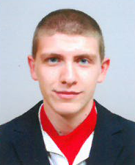

Personal information
Stoyan Petrov Yanev
Bulgaria, Sofia, Students town, №42, B
08********
stoyanyanev98@gmail.com
Gender: male | Date of birth: 24.02.1998 |
Education
From 2017
University: SU "St.Kliment Ohridski" Faculty of Mathematics and Informatics Software Engineering
2017-2013
Math and Science High School “Yane Sandanski“ Gotse Delchev
2013-2005
Primary School „Brothers Miladinovi“ Gotse Delchev
Personal skills
| UNDERSTANDING | SPEAKING | WRITING | |
|---|---|---|---|
| English | B1 | B1 | B1 |
Other information
Achievements
Diet_Diary – Third place in competition „John Atanasoff”, category Computer Applications. Computer application,which is supposed to be used by people who want to be healthy. In the main module “Diary” the user can calculate the daily intake of calories for this purpose he should choose the products for every meal. Also he has the opportunity to delete or save products. The module “Helpful” provides different types of phisical exercises.In the section “Calculators” the user can find more calculators which calculate the body mass index and to define their daily need of calories.
VB_Self_Study – Second place in competition „John Atanasoff ”, category Computer Applications. The main function of the application is to help everybody who wants to start studying the programming language Visual Basic. The application has seven modules. In the first module “Exercise” contains different tasks for exercise. If the user finds them difficult he can see the design of the task and hint for the solution. Next module is a “Lessons” contains theoretical material from the curriculum. In module “Tasks” the user can find tasks whith their full solution and if he wants he can load an exe fail for every task. In this way he can make connection between his idea for the solution and the suggestion of the application. “Change profile” is a module that allows the user to add new menu called “Teachers block”. In the section “Test” users can check their knowledge. The other modules are “Guidebook” and ”Dictionary”.
Hungry_Hero – Final project in Telerik school academy. Is mini computer game, in which the player has five lives. The purpose of the game is that the player has to eat (collect) more fruits and try not to get hurt by the airplanes.
Ecology – Is a web site, with different pages which provide information about the ecology condition of the flora and fauna. It also contains information about future ecology events, videos, photos and curious facts.